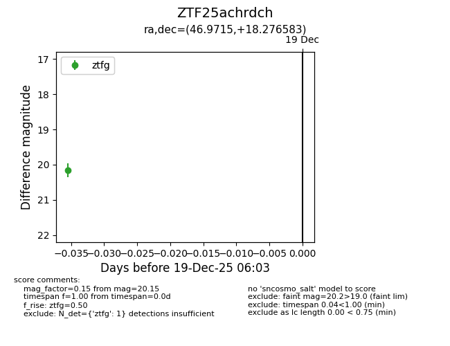
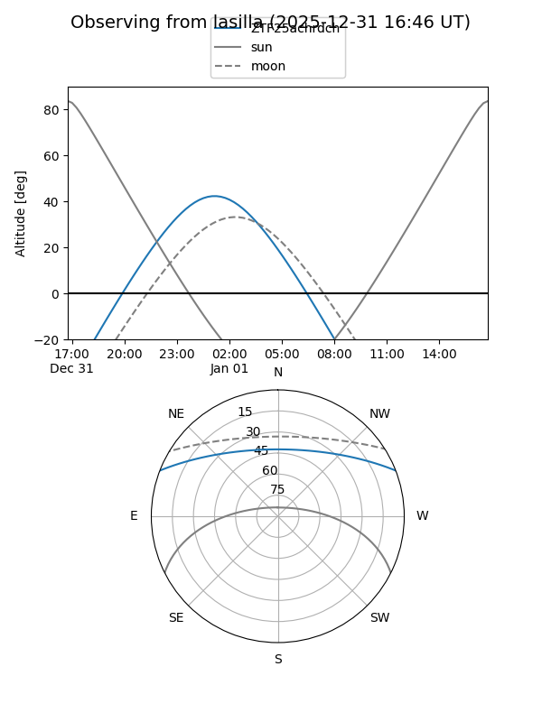
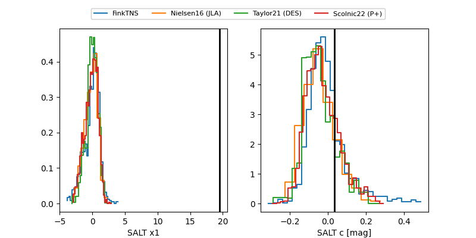

ZTF25achrdch
Target ZTF25achrdch at 2025-12-21 05:53
Aliases and brokers:
FINK: fink-portal.org/ZTF25achrdch
Lasair: lasair-ztf.lsst.ac.uk/objects/ZTF25achrdch
ALeRCE: alerce.online/object/ZTF25achrdch
alt names
ZTF25achrdch (ztf,fink_ztf)
Coordinates:
equatorial (ra, dec) = 46.9715,+18.27658
equatorial (HMS+DMS) = 03:07:53.15,+18:16:35.70
galactic (l, b) = (162.8010,-33.82714)
Flags:
Photometry:
last ztfg=20.28, ztfr=20.32
2 ztfg, 1 ztfr detections
Lightcurve

Visibility


Additional plots
